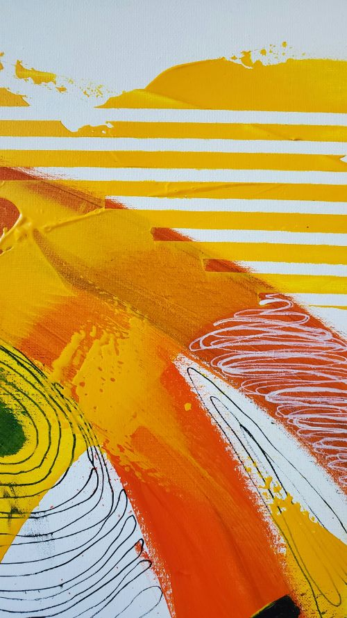

Are you looking for the best Craft Clipart for your personal blogs, projects or designs, then ClipArtMag is the place just for you. We have collected 43+ original and carefully picked Craft Cliparts in one place. You can find more Craft clip arts in our search box. Feel free to download, share and use them!
Explore and download 781 free high-quality Arts And Crafts clipart. All Arts And Crafts clip art images are transparent background and free to download.
The earliest known forms of art emerged long before written language, serving as a primary means of communication, storytelling, and cultural expression for early humans (Homo sapiens) and possibly Neanderthals +1 . These early artworks include cave paintings, rock engravings, and small figurines, often depicting animals, human figures, and abstract symbols. +1 . Notable examples include the Venus figurines, such as the Venus of Hohle Fels and Venus of Willendorf, which date back between 43,000 and 35,000 BCE .
Continue Reading
